Pendidikan tahfiz yang menekankan hafazan Al-Quran, pembentukan akhlak dan persediaan dunia serta akhirat.
Maahad Tahfiz Riyadhus Solihin merupakan institusi pendidikan Islam yang berfokus kepada hafazan Al-Quran, pembelajaran ilmu agama dan pembentukan sahsiah pelajar berlandaskan Al-Quran dan As-Sunnah.
Kami berusaha melahirkan generasi huffaz yang berilmu, berakhlak mulia dan bersedia menjadi pemimpin ummah pada masa hadapan.
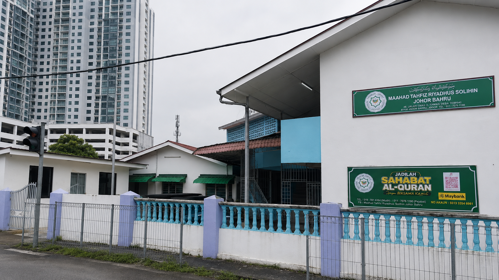
Program disusun untuk membimbing pelajar menguasai bacaan, hafazan, kefahaman asas dan persediaan ilmu yang lebih luas.
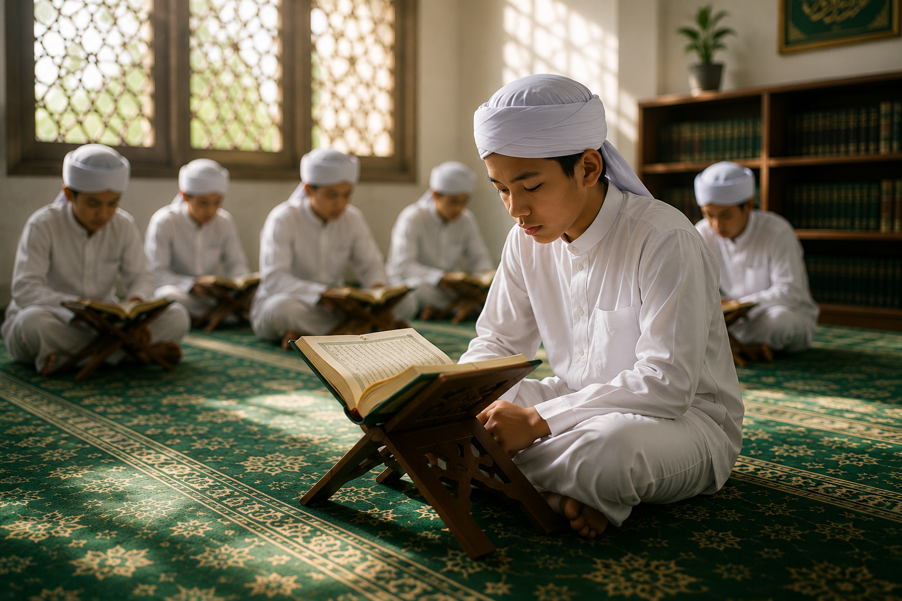
Kelas hafazan Al-Quran dengan bimbingan guru secara berterusan.
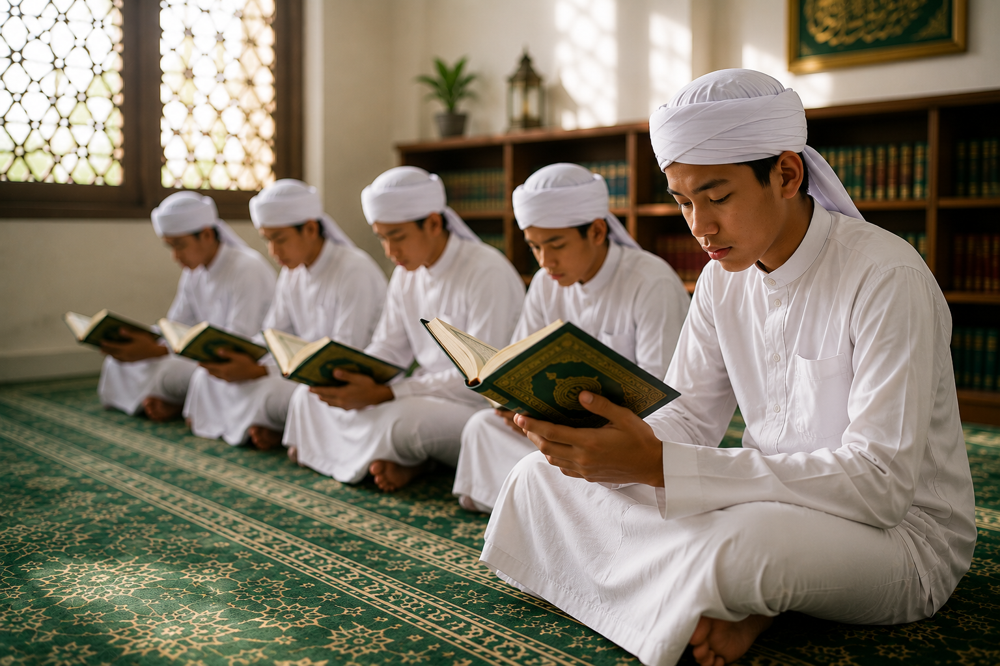
Pembelajaran bacaan Al-Quran dengan makhraj dan tajwid yang betul.
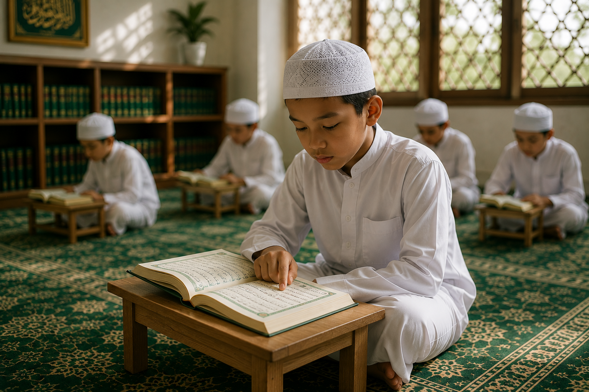
Asas mengenal huruf dan bacaan awal Al-Quran untuk pelajar baharu.
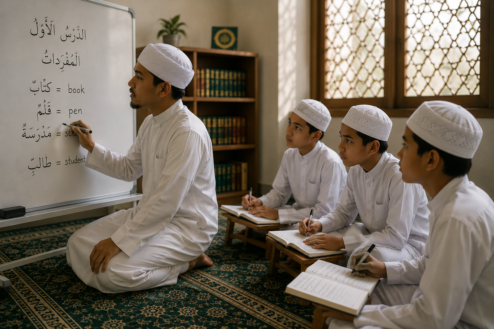
Persediaan bahasa untuk memahami ilmu agama dan melanjutkan pengajian.
Kami membina suasana pendidikan yang membantu pelajar berkembang sebagai insan berilmu dan berakhlak.
Hafazan, bacaan dan kefahaman Al-Quran menjadi teras pendidikan.
Pembentukan peribadi mulia diterapkan dalam kehidupan harian.
Keseimbangan ilmu agama dan persediaan masa depan.
Suasana kondusif untuk belajar, menghafaz dan beramal.
Pelajar dilatih menjadi lebih berdikari dan beramanah.
Lihat sendiri aktiviti harian pelajar dalam hafazan, talaqqi dan pengajian berkumpulan.
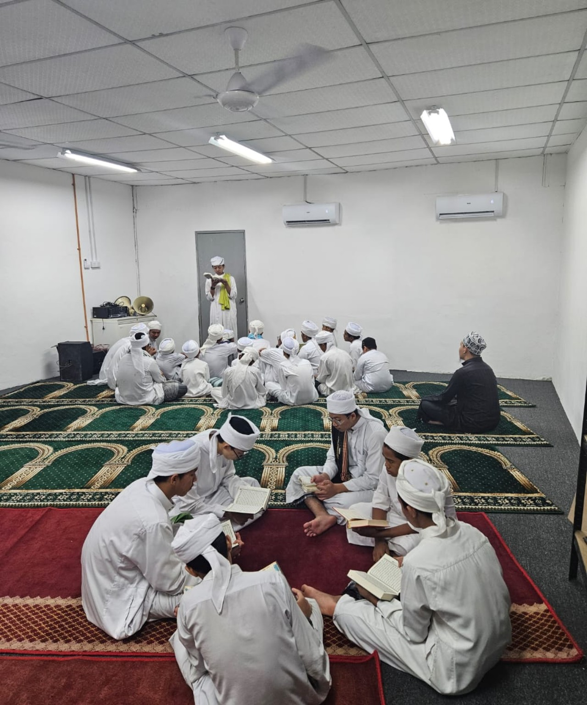
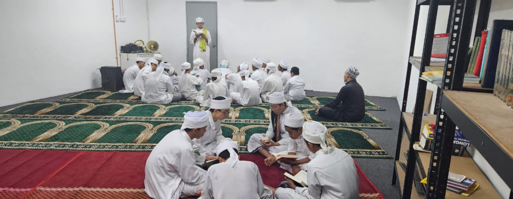
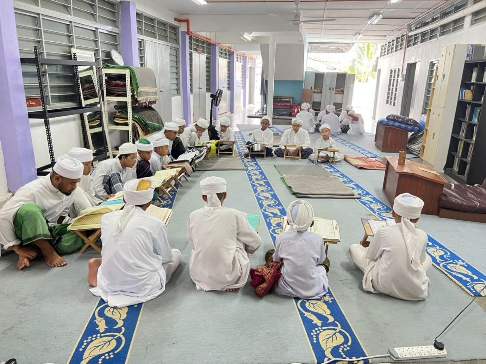
Video aktiviti menunjukkan suasana pembelajaran, hafazan dan kehidupan harian pelajar.
Kami mengalu-alukan kemasukan pelajar yang berminat mendalami ilmu agama dan Al-Quran.
Kemasukan dibuka untuk pelajar lelaki.
Pelajar berada pada usia yang sesuai untuk mengikuti rutin madrasah.
Minat menjadi asas penting untuk istiqamah dalam pengajian.
Kemasukan perlu mendapat sokongan ibu bapa atau penjaga.
Mempunyai asas bacaan Al-Quran yang baik.
Boleh membaca, menulis dan mengira.
Bersedia mengikuti undang-undang dan disiplin madrasah.
MTRS turut mempunyai cawangan pendidikan Islam untuk pelajar dan kanak-kanak di beberapa lokasi.
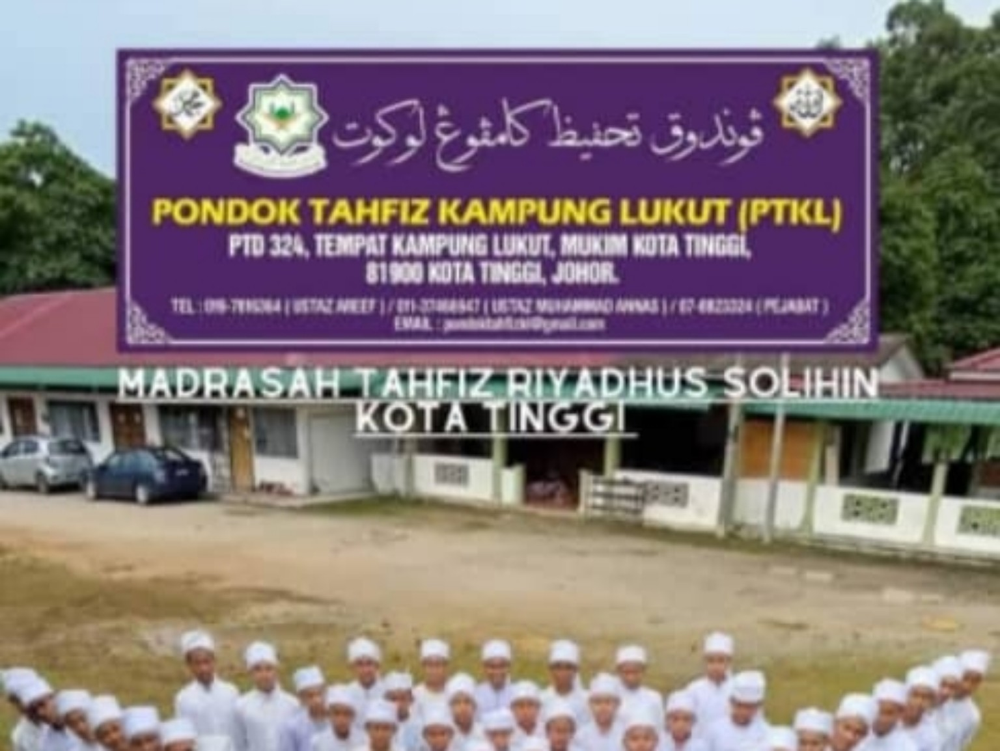
Pusat pendidikan hafazan Al-Quran dan pengajian agama berasaskan pondok yang menekankan disiplin, adab dan ilmu.
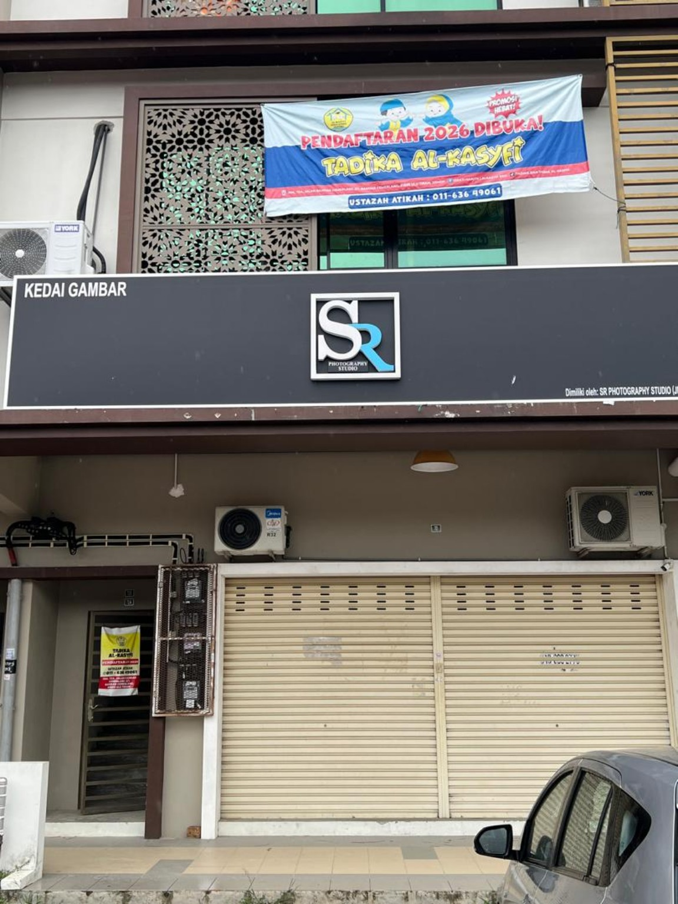
Pendidikan awal kanak-kanak dengan asas nilai Islam, adab dan pembelajaran yang membentuk generasi soleh.
Sumbangan anda membantu kelangsungan operasi madrasah, kebajikan pelajar dan pembangunan fasiliti demi melahirkan generasi pewaris Al-Quran.
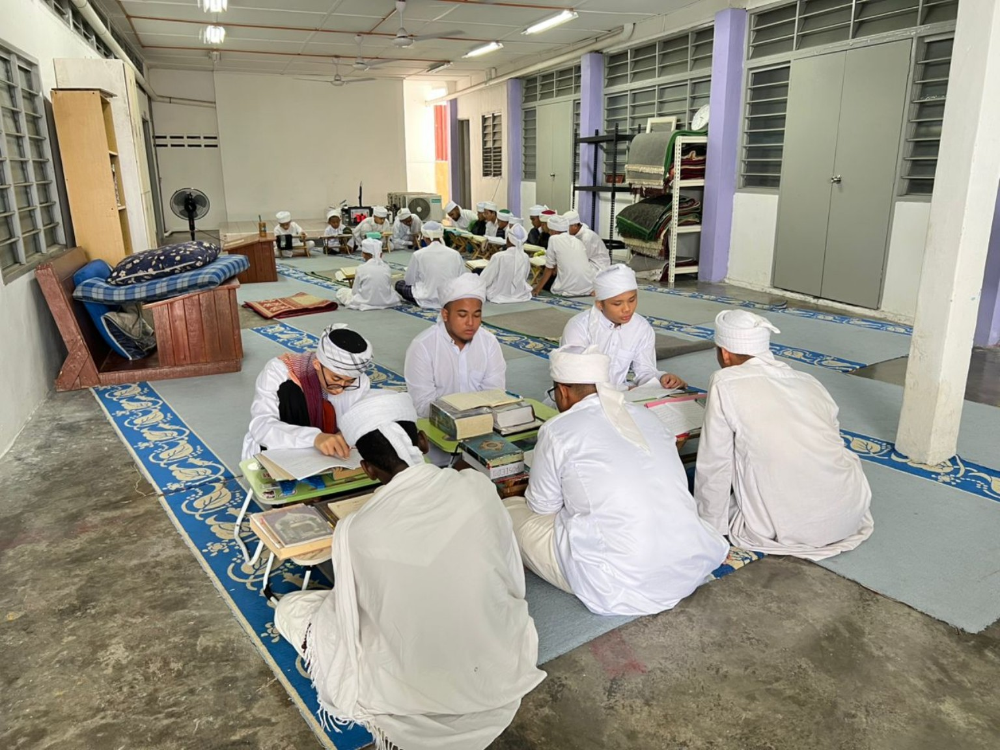
Imbas QR DuitNow untuk berinfaq. Sila hantar resit kepada pentadbiran untuk rekod sumbangan.
Infaq turut membantu penambahbaikan fasiliti agar suasana pembelajaran lebih selesa, selamat dan kondusif.
157, Jalan Pantai, Kampung Bakar Batu, 80150 Johor Bahru, Johor Darul Ta'zim.
Buka lokasi dalam Google Maps
Hubungi kami untuk maklumat kemasukan, lawatan atau pertanyaan lanjut mengenai program pengajian.
Hubungi Sekarang